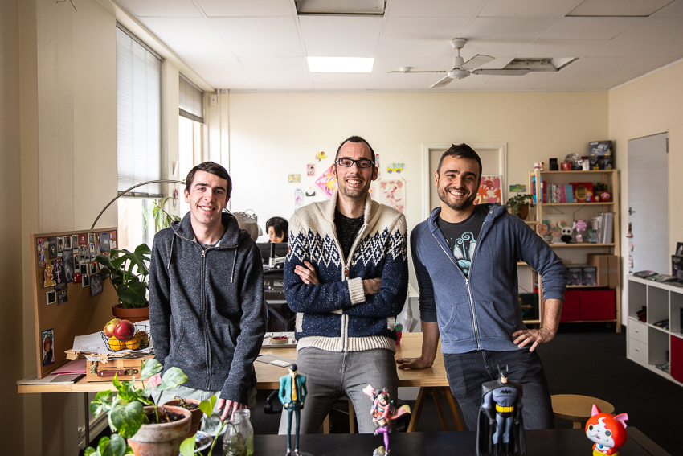
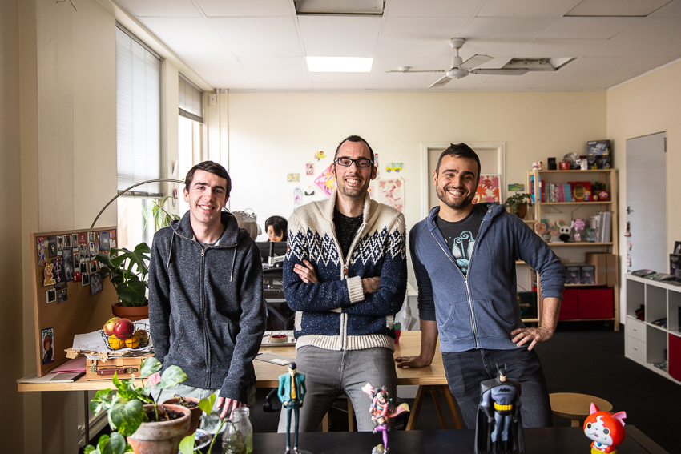

The Team
Our team is located in Adelaide, south Australia and consists off Ari Gibson, William Pellen and Jack Vine
Our team is located in Adelaide, south Australia and consists off Ari Gibson, William Pellen and Jack Vine
Jack who is to the left in the picture is team cherry's supremely talented coder. Jack’s been building out the systems, tightening and optimising and adding a suite of all new exciting features. Jack has worked with Team Cherry for some time now, being instrumental in Hollow Knight’s console releases and the development of its huge final free Content Pack, Godmaster.
Ari who is in the middle is the Co-director of Team Cherry. He previously ran the animation studio Mechanical Apple and has worked on countless projects across film, games and music videos. Ari's been modding games from before computers were colour and has loved them since his first ever game rental: Faxanadu for NES.
William who is tho the right is the Co-director of Team Cherry. He's been designing and building games for years, creating crazy worlds for people to poke around in and explore. He's loved games ever since his Dad found the wing boots for him in Zelda 2, and wants to recreate that experience of adventure and excitement for other people.